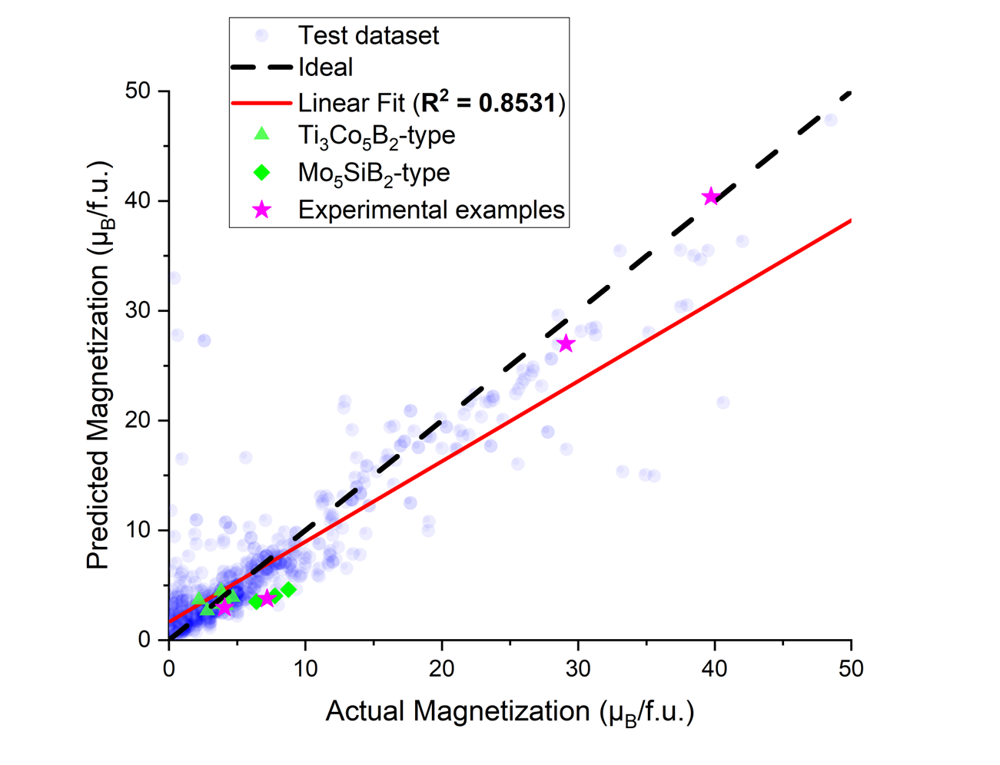
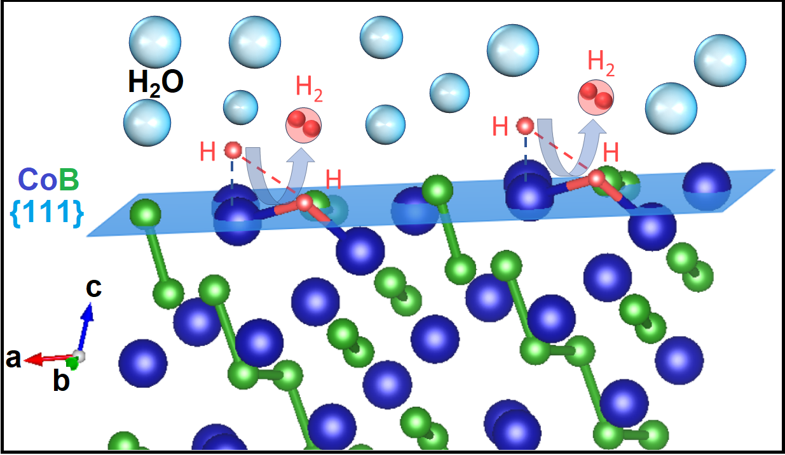

Machine Learning Predictions of the Magnetic Properties of Inorganic Materials
At UCR, I led a machine learning based project and collaborated closely with experts in solid-state chemistry, materials science, and energy-related technologies to explore the prediction and analysis of intermetallic compounds using materials informatics and machine learning techniques. This experience significantly enhanced my data science expertise, particularly within materials discovery. Initially, I built a strong foundation through comprehensive literature reviews to gain domain expertise. Then, using this knowledge, I identified a novel research objective aimed at accurately predicting material properties and accelerating materials discovery. I then curated an extensive dataset of 8438 intermetallic compounds from the Materials Project high-throughput computational database, with a strong emphasis on effective feature engineering and featurization strategies to extract meaningful compositional and structural descriptors using materials data mining tools such as MatMiner and Pymatgen Python libraries. I then applied advanced machine learning models, such as, Extra Trees, gradient boosting algorithms and neural networks, to uncover meaningful patterns. This work enabled us to achieve efficient and accurate prediction of magnetic properties for intermetallic compounds, providing novel insights into material behavior and resulting in the discovery of 544 promising, never-before-synthesized Ti3Co5B2-type boride candidates. My findings have been presented at peer-reviewed conferences such as ACS and are available online here.
DFT studies on Earth-Abundant Transition Metal Borides (TMBs) as electro-catalysts for Hydrogen Evolution Reaction (HER)

In parallel, for project 2 of my PhD, I have also contributed to research in electrocatalysis, particularly focused on the hydrogen evolution reaction (HER). I investigated the catalytic behavior of transition metal borides (TMBs) and other earth abundant intermetallic compounds using a of density functional theory (DFT) simulation techniques. By analyzing the energetics of intermediate adsorption and surface stability, I helped identify promising candidates for earth-abundant, high-performance HER catalysts. This work emphasized not only predictive modeling but also the importance of connecting electronic structure insights with catalytic activity trends. Our findings contributed to a deeper understanding of the structure–property relationships that govern electrocatalytic performance in these complex materials systems.. These works highlight the of structure-property relationships understanding the mechanism behind HER catalysis and its importance in guiding the design of electro-catalysts and future of cheap, large-sclaing renewable energy resources. This project resulted in a total of 5 co-first authored papers. Read these papers here.
Artificial Intelligence Assisted Cosmological Simulations, UCR office of DEI
Add DEI stuff here.